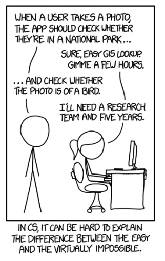

Teknik 1 · Kapitel 1
Teknikutvecklingsprocessen
I dag finns appar som klarar uppgiften. Merlin Bird ID identifierar fåglar med både bilder och fågelsång.
In the 60s, Marvin Minsky assigned a couple of undergrads to spend the summer programming a computer to use a camera to identify objects in a scene. He figured they'd have the problem solved by the end of the summer. Half a century later, we're still working on it.— Alt text from xkcd #1425, “Tasks”, September 24, 2014
Lektionsmål
Efter kapitlet ska du kunna...
- förklara vad teknikutveckling innebär
- beskriva processens nio steg
- förklara varför prototyper, testning och iteration behövs
- använda processen i ett eget digitalt projekt
Startfråga
Var börjar teknikutveckling?
Med en smart idé?
Med ny teknik?
Med programmering?
Oftast med ett problem eller behov.
Idén blir värdefull först när den hjälper någon.
Begrepp
Vad är teknikutveckling?
Att skapa en ny teknisk lösning eller förbättra en som redan finns.
Målet är att lösa problem, uppfylla behov eller göra något enklare, snabbare och bättre.
Exempel: appar, webbplatser, spel och digitala tjänster.
Drivkrafter
Varför utvecklas teknik?
- människors och organisationers behov
- miljöproblem och samhällsutmaningar
- konkurrens och ekonomiska möjligheter
- nya material och tekniska möjligheter
Helhetsbild
Nio steg – inte en rak linje
Testresultat kan skicka oss tillbaka till ett tidigare steg.
Steg 1
Identifiera problemet
- Vad fungerar inte eller saknas?
- Vem påverkas?
- Vilket behov ska lösningen uppfylla?
- Vad måste lösningen klara?
Exempel: En förenings medlemmar hittar inte aktuell information.
Steg 2
Research och analys
- undersök målgruppen
- jämför liknande lösningar
- kartlägg tekniska möjligheter och begränsningar
- kontrollera lagar, exempelvis GDPR och upphovsrätt
Research minskar risken att lösa fel problem.
Steg 3
Idégenerering
Ta fram flera möjliga lösningar innan du väljer.
- brainstorming
- skisser
- diskussion
Skjut upp bedömningen.
Jämför idéerna när alternativen finns synliga.
Steg 4
Konstruktion och design
Planera hur lösningen ska fungera och upplevas.
- struktur och funktioner
- layout, navigation och interaktion
- tekniska val och begränsningar
- skisser, flödesscheman och modeller
Steg 5
Bygg en prototyp
En prototyp är en tidig version som gör idén möjlig att prova.
| Låg detaljnivå | Hög detaljnivå |
|---|---|
| Pappersskiss eller enkel wireframe | Klickbar modell eller fungerande kod |
| Snabb och billig att ändra | Testar beteende mer realistiskt |
Kontrollfråga
Vad är en prototyp till för?
Steg 6
Testa lösningen
- Fungerar funktionerna?
- Förstår användaren vad den ska göra?
- Fungerar lösningen på rätt enheter?
- Är prestanda och stabilitet tillräckliga?
Ett test behöver ett tydligt mål och observerbara resultat.
Steg 7
Iteration: förbättra och testa igen
Iteration betyder att lösningen utvecklas i flera omgångar.
Steg 8
Produktion och lansering
När lösningen fungerar tillräckligt bra görs den tillgänglig för användare.
- webbplatsen publiceras
- appen distribueras
- spelet släpps på en plattform
Lansering är en milstolpe – inte slutet på arbetet.
Steg 9
Lösningens livscykel
- underhåll och säkerhetsuppdateringar
- nya funktioner och förbättringar
- buggrättningar
- ersättning eller avveckling
Teknisk skuld: genvägar tidigt kan göra framtida ändringar dyrare.
Interaktiv övning
Vilket steg behövs nu?
En idrottsförening vill ersätta sin gamla webbplats. Innan arbetet börjar behöver projektgruppen ta reda på vilken information och vilka funktioner medlemmarna faktiskt behöver.
Exempel · webbplats
Processen i ett projekt
- Behov: skolinformation är svår att hitta.
- Research: intervjua elever och lärare.
- Design: planera sidor och navigation.
- Prototyp: bygg en första version.
- Testa på mobil och förbättra.
- Publicera och håll innehållet aktuellt.
Exempel · spel
Samma process, annan produkt
- Mål: skapa en tydlig spelupplevelse.
- Research: studera liknande spel.
- Design: planera mekanik, regler och nivåer.
- Prototyp: bygg en enkel spelbar version.
- Testa styrning, balans och prestanda.
- Släpp, rätta buggar och skapa uppdateringar.
När processen brister
Fel blir dyrare sent
| Brustet steg | Möjlig följd |
|---|---|
| Problem och research | Produkten löser inget viktigt behov. |
| Testning | Buggar och prestandaproblem når användarna. |
| Iteration | Kända brister blir kvar vid lansering. |
| Livscykel | Underhåll blir dyrt och osäkert. |
Diskussion
Är processen alltid likadan?
Nej. Stegens omfattning beror på projektets risk, storlek och mål.
Men frågorna bakom stegen behövs även i små projekt.
Det viktiga är att kunna motivera vad ni gör, i vilken ordning och varför.
Arbetsuppgift
Planera en digital lösning
- Välj ett problem i skolan eller vardagen.
- Beskriv användaren och behovet.
- Gör research och ta fram tre idéer.
- Välj en idé och skissa en prototyp.
- Planera ett test: vem, vad och hur?
- Beskriv hur resultatet ska förbättra lösningen.
Exit ticket
Tre saker innan du går
- Vilket steg är viktigast att göra tidigt – och varför?
- Vad är skillnaden mellan en idé och en prototyp?
- Ge ett exempel på iteration i ett projekt.
Sammanfattning
Kom ihåg
- Teknikutveckling utgår från problem och behov.
- Research och flera idéer ger bättre beslut.
- Prototyper gör idéer testbara.
- Testning och iteration förbättrar lösningen.
- Produkter behöver underhåll under hela livscykeln.